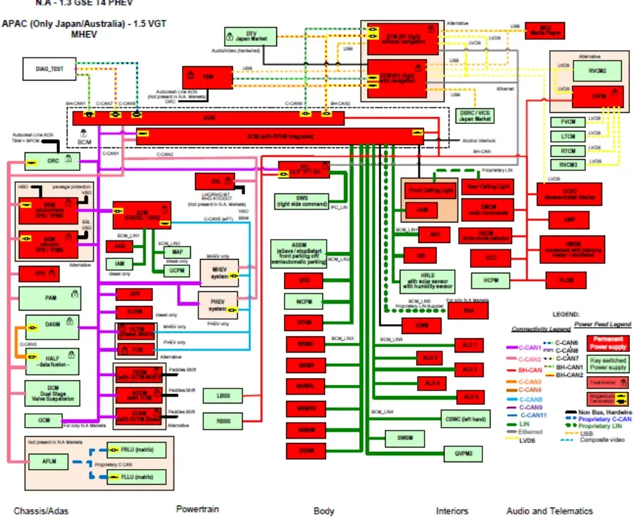
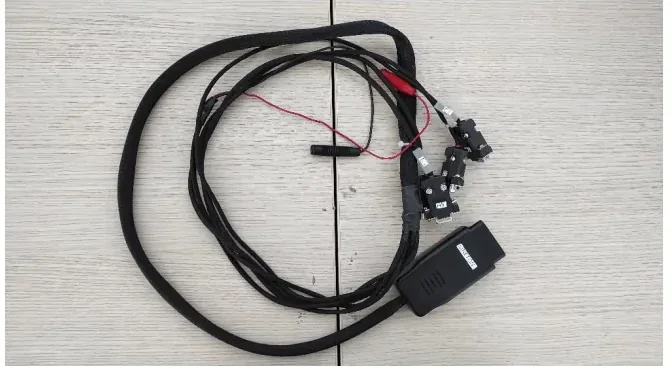
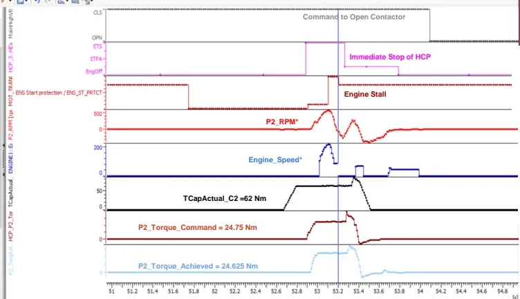

First Level Analysis (FLA)¶
When a test vehicle shows a warning lamp, fails to start, or behaves unexpectedly during a charging session, someone has to examine the data first: reconstruct what actually happened and route the problem to the right specialists. That is the job of the First Level Analysis (FLA) team.
By the end of this article you will be able to:
- explain what FLA delivers (and, just as importantly, what it does not deliver),
- follow an issue from the first claim e-mail to a tracked, routed analysis,
- connect a laptop to a real vehicle through the diagnostic socket and see live bus traffic,
- read a fault code, look it up in the DTC Matrix, and turn raw signals into a root-cause hypothesis.
What the FLA team actually does¶
The FLA team is a group of engineers whose primary task is to analyze and diagnose the vehicles under test. Vehicles can show "non-normal behavior" at any point in their life:
- during prototype construction,
- in the final production process,
- while accumulating mileage in reliability and quality testing,
- in after-sales operation, at the customer.
For every reported issue, FLA owes the organization three concrete things:
- A failure report containing everything the second-level analysis needs: the data logger files, the Vehicle Scan Report (VSR), and the vehicle status as reported by the fleet support engineer.
- Clear ownership. The issue gets routed to the right function inside the Propulsion organization — or to the E/E Vehicle Team when the problem sits outside the propulsion area. Second-level analysis only starts once someone clearly owns it.
- Tracking. The issue goes into a dedicated Open Item List called the FTT (Fault Tracking Table), where its evolution and any new occurrences are monitored.
FLA is not the fixer
Your deliverable is a well-defined, understandable report with a possible root cause and a correct solution path — not the final fix. The actual software or hardware correction belongs to the second-level team that owns the function.
How an issue reaches your desk¶
Analysis never starts ad-hoc. Every claim flows through the same pipeline, driven by the PVM (Program/Project Validation Manager):
flowchart TD
A[Test engineer reports issue<br/>by e-mail with test data] --> B[PVM receives all claims]
B --> C["Daily PVM / FLA meeting:<br/>occurrences, diagnostic obstacles,<br/>monitoring strategy"]
C --> D[PVM sets work order<br/>and issue severity]
D --> E[Tasks split among FLA members<br/>by priority]
E --> F[FLA analysis:<br/>receive → analyze → diagnose → deliver]
F --> G[Report shared by e-mail,<br/>data uploaded to SharePoint]
G --> H[FTT updated;<br/>2nd level owner assigned]Claims arrive from many directions, but they all land in the same issues list:
- Flying Doctors and Fleet Support Engineers — engineers who test and diagnose vehicles at the customer site or on fleet activities (hot, winter, interoperability testing).
- Fleet reports — HMSR fleet report, RG / Captive / FFB fleet reports (via IMAN or ticket).
- End-of-Line claims from the plant.
- OBD Scorecard / ControlTec — data records uploaded from the fleet.
- Extras — durability fleets, NVH campaigns, reappear tests, and similar.
Several teams work alongside FLA, each with a different focus: the fleet team exercises the vehicle the way a new customer would and records what goes wrong; the flying doctors handle on-site technical support, software updates and high-severity customer problems; the plant team handles production-process issues; the after-sales team looks after customer-facing technical support.
Delivery time
The target is to deliver the first-level analysis within 24 hours of the claim — or faster. Speed matters: second-level teams and fleet operations are blocked until the issue is characterized and routed.
Your FLA toolbox¶
Most of these tools are introduced in MIL2 and MIL3. In FLA they are combined for a new purpose — reconstructing what the vehicle did:
| Tool / artifact | Role in FLA |
|---|---|
| CANalyzer | Reads CAN logs (.blf, .asc); visualizes signals to reproduce the claim; decodes diagnostic traffic |
| INCA / MDA | Reads ECU-internal measurement files (.mdf) recorded on fleet data loggers over CAN/XCP |
| CDA / Dianalyzer | Diagnostic tools: read DTCs, run RDI requests, I/O controls, routines, flash ECUs, produce the Scan Report |
| VSR (Vehicle Scan Report) | Snapshot of all ECUs' DTCs and identification data at the time of the issue |
| DTC Matrix | Per-ECU table describing every DTC: causes, symptoms, repair actions |
| Topological scheme | Which ECU sits on which CAN network, with termination resistors |
| DBC / VF documents | Decode raw frames into signals; link signals to vehicle functions |
| SharePoint | Backup and sharing of all analysis data |
Know the vehicle before you touch the data¶
Signals cannot be interpreted correctly without understanding the vehicle they come from. Before analyzing a claim on a new program, an FLA engineer studies four things — illustrated here with the MHEV (Mild Hybrid Electric Vehicle) P2.5 48 V vehicle from the case study below:
- Propulsion system configuration — on a P2.5 48 V mild hybrid, which machines can crank the engine (the 12 V P1f belt starter generator and the P2 electric motor in the transmission), and through which clutches the torque flows.
- Mechanical/electrical layout — where the ECUs and actuators are physically installed.
- Network topology — which ECUs share each CAN bus (see the figure below for a production example).
- Cooling system configuration — which pumps and circuits cool the power electronics, battery and engine (over-temperature DTCs often trace back here).

The topological scheme divides the vehicle into domains — ADAS (Advanced Driver Assistance Systems), Powertrain, Body, Interiors, Audio & Telematics — and draws every CAN network as a colored line. The buses you will use most are C1, C2, BH and C5 (the ePT network). Notice how the ePT network connects only propulsion ECUs. The scheme also marks each bus's termination resistor as a small yellow rectangle inside the ECU that hosts it: on the ePT bus the BPCM (Battery Pack Control Module) and EVCU (Electric Vehicle Control Unit) carry the termination, on C1 it is the BCM (Body Control Module) and EVCU. When you suspect a wiring problem, this drawing tells you exactly which two ECUs to measure between.
The diagnostic language you will speak every day¶
DTCs: active and stored fault codes¶
A DTC (Diagnostic Trouble Code) is a fault recorded by an ECU (Electronic Control Unit), encoded in three bytes: the first two identify the component or system, the third identifies the symptom — the type of failure. A DTC can be:
- Active — the fault condition is present right now;
- Stored — the fault is gone, but the ECU remembers it. Stored DTCs can be cleared with a memory-clear command.
The three diagnostic services you will use constantly¶
| Service | Request SID | Positive response | What it does |
|---|---|---|---|
| ReadDataByIdentifier (RDI) | 0x22 |
0x62 |
Reads an ECU parameter (e.g. engine speed) by its identifier |
| InputOutputControlByIdentifier | 0x2F |
0x6F |
Commands a single actuator to perform one specific action |
| RoutineControl | 0x31 |
0x71 |
Starts an on-board routine — a coordinated sequence involving several components |
The positive response is always the request service ID + 0x40 — send
0x22, receive 0x62. A negative response is 0x7F, followed by the
original service ID and a negative response code. This pattern makes raw
diagnostic traces straightforward to read.
The DTC Matrix: from raw code to diagnosis plan¶
For each ECU, the DTC Matrix (DTC Criteria Matrix) is the reference table that turns a raw code into a plan of attack. Its columns include:
- the DTC value in hex and standard (J2012) format, plus a description;
- Warning indicator — whether this DTC switches the MIL (Malfunction Indicator Lamp, the engine warning lamp) on;
- Stored-DTC self-healing criteria — how many key cycles without the fault the ECU needs to clear the code by itself;
- Engineering notes — e.g. which vehicle function and which signal of which message relates to the DTC;
- Customer perception symptom — what the driver actually feels or hears;
- Possible causes and repair action (a checklist);
- Mature threshold — the conditions under which the DTC sets;
- De-mature criteria — the conditions under which it is only stored (e.g. a signal below/above/equal to a threshold).
PROXI and flashing: two field essentials¶
Two Dianalyzer functions are used frequently in the field:
- PROXI — the vehicle configuration file listing every fitted feature (e.g. whether the car has adaptive cruise control). The Body Computer is the PROXI master and distributes the relevant part to each ECU. A wrong PROXI makes ECUs set DTCs for features that are not installed — if the PROXI declares adaptive cruise control on a car without it, you will chase "phantom" faults that do not exist.
- Software update — flashing an ECU needs three files: IDX (the electronic label with software/hardware data), PRM (the flash procedure guide) and BIN (the software itself).
Plugging into the car¶
Everything starts with the physical connection. The bridle (breakout harness) goes between the vehicle's EOBD (European On-Board Diagnostics) socket and the CANcaseXL interface that talks to your laptop.

EOBD pinout (Fiat/Stellantis vehicles)¶
The EOBD plug has 16 pins. Some assignments are fixed by law; others are OEM-specific:
| Pins | Network | Note |
|---|---|---|
| 6 / 14 | CAN 1 (C-CAN, diagnostic) | Fixed by regulation — always the same |
| 12 / 13 | CAN 2 | OEM-specific |
| 3 / 11 | BH-CAN | OEM-specific |
| 4 / 5 | Ground | |
| 16 | Battery +12 V | |
| — | CAN 5 (ePT powertrain) | Not routed to the EOBD plug |
The other end of the bridle carries DB9 connectors that plug into the CANcase channels; on the DB9, pins 2 and 7 carry the CAN pair.
CANcase and channel setup in CANalyzer¶
Each CANcase channel has its own transceiver, and every transceiver works only within a certain speed range — so each DB9 must land on the right channel, and each channel must be configured with the right bit rate. In CANalyzer:
- Open Analysis & Stimulation → Database Management and load the DBC
(Database CAN) file for each channel (e.g.
CAN_C1_Vehicleon channel 1, the C-CAN DBC on channel 2,CAN_C2_VehicleandCAN_BH_Vehicleon channel 3). - Associate the CANcase hardware channels with the CANalyzer channels and set each network's speed.
- Start the measurement: if the trace shows messages being exchanged, the association is correct and the CANcase LED is green.
The Secure Gateway (SGW)
Modern vehicles carry an SGW (Secure Gateway) ECU that blocks unauthorized access to the buses. If the SGW is locked you will see no messages at all on the trace — even with perfect wiring and perfect settings. Unlock it first (from a diagnostic tool such as CDA or Dianalyzer's Cyber Security panel, or bypass it with an ETAS/ETK connection). In Dianalyzer, ECUs that answer are shown in blue; ECUs with an exclamation mark are not communicating.
INCA: looking inside the ECU¶
While CANalyzer observes the bus, INCA observes the inside of the ECU: it reads internal variables and changes calibration values at run time through the CCP (CAN Calibration Protocol) or XCP (Universal Measurement and Calibration Protocol) — CCP rides on classic CAN, XCP also on extended CAN and other transports. This only works on development (open) ECUs: with a production ECU you cannot touch calibrations, and the only way to deploy new values is to flash the new software version.
A useful field technique: when a new software release only changes calibration data, you can import the calibration from the reference page into the working page instead of re-flashing everything. For bypassing the SGW, the ETAS hardware connects to the vehicle through the ETK interface (plus supply, Ethernet and the CAN lines to the EOBD plug).
Case study: FTT#344 — chasing a "gearbox fault" that wasn't one¶
This section walks through a real FLA analysis, end to end. The claim: a transmission fault ("Avaria Cambio") reported on a 48 V mild-hybrid vehicle. The reasoning below is the general template for most FLA analyses.
Step 1 — Check that you have data¶
Look up the vehicle's data records on ControlTec, download them, and verify they are consistent with the VSR and the fleet engineer's report. No usable data, no analysis.
Step 2 — Read the DTC memory¶
Start from the ECU named in the claim — the TCM (Transmission Control Module) — then read all the other powertrain ECUs. Result:
- P0A3C on the TCM, with
P2_Mode_Status = Idle/Failure; - P0A3D —
P2_GMG_OVER_TEMPERATUREon the TCM.
Step 3 — Consult the DTC Matrix¶
Look up both codes in the TCM's DTC Matrix: warning indicator behavior, possible causes, mature/de-mature criteria. This frames your hypotheses before you touch a single signal.
Step 4 — Visualize the claim through signals¶
Now the core FLA skill. Your first goal is to see on a graph what the driver saw — which lamp or message appeared on the IPC (Instrument Panel Cluster), and at what exact moment — so the second-level owner gets a precise point in time instead of a large volume of irrelevant data. Around the event, always collect the boundary conditions: Drive Ready vs. Key-On, HEV mode, vehicle speed, engine speed, 48 V SOC (State of Charge), gas pedal, brake pedal, shift lever position, and so on. They become essential when the root cause is not found immediately and a reappear test must be set up.

Reading the plot top to bottom reconstructs the whole event chain:
- The vehicle was performing an EM (Electric Machine) Low Power Start — an engine crank performed by the P2 electric motor, used for example when the 48 V battery SOC is below 44.5 %.
- The P2 motor applied 24.75 Nm of commanded torque
(
P2_Torque_Command), achieving 24.625 Nm (P2_Torque_Achieved), with clutch 2 closed atTCapActual_C2 = 62 Nm. Through the intermediate gear ratio of 2.5 from P2 to the sub-transmission, that is roughly 60 Nm at the flywheel. - The engine spun up (
Engine_Speed,P2_RPMrise) but never reached combustion — the speed fell back to zero: an engine stall. - The HCP (Hybrid Control Processor) reacted with an immediate stop and commanded the contactor to open.
- The opened contactor made the TCM set P0A3C, which lit the transmission lamp — the driver's claim.
So the transmission lamp and the TCM fault codes were consequences, not the cause. The real cause was a failed engine start: the P2 torque was simply not enough to spin the engine up to combustion.
Step 5 — Draw the conclusion and route it¶
The FLA report stated the causal chain and assigned second-level ownership:
- ECM (Engine Control Module) — investigate the failed engine start: 24.75 Nm from P2 (≈ 60 Nm at the flywheel) was insufficient to spin up the engine;
- HCP — confirm the torque command to P2 during the EM Low Power Start and the reaction to the stall.
Step 6 — Track the resolution in the FTT¶
The FTT entry was updated as the second-level answers came in:
- HCP confirmed its reaction was by design: immediate stop and contactor
opening after an engine stall → P0A3C + transmission lamp. The torque
command to P2 is computed by HCP from the TCM signal
TCapActual_C2(the torque capacity of the closing clutch 2). - ECM confirmed the torque was insufficient to start combustion in that condition.
- Fix: a TCM software calibration change — a higher saturation offset, set as the minimum saturation during EM start, with more torque delivered at 200 and 400 engine rpm — raising the clutch-2 torque (and hence the P2 torque computed by HCP) to avoid the stall. The issue was correlated to warm conditions (coolant above 50 °C) and planned for introduction via a dedicated PCR.
Why boundary conditions mattered here
The failure only appeared in one specific situation — EM Low Power Start at low 48 V SOC with a warm engine. Without logging SOC, coolant temperature and the start mode, the second-level teams would never have reproduced it. Log all relevant boundary conditions for every event.
Watching diagnostics live in CANalyzer (PDX)¶
FLA often needs to watch a diagnostic conversation (tester ↔ ECU) live or in a log. With a diagnostic description loaded (PDX/CDD — the packaged diagnostic database), CANalyzer decodes it for you.
Setup — diagnostic response decoding:
- In the diagnostic/PDX configuration, select the CAN channel carrying the C1 and diagnostic messages.
- Select the interface variant (e.g. Normal 29 Bit for CAN C1 on the Atlantis platform).
- Check the request/response IDs of the ECU under test (e.g. BPCM) in the transport layer tab, then confirm.
- You can then add RDIs and other diagnostic parameters to a Graphics
window with
Ctrl+Rand pick the signals you need — diagnostic answers plotted like normal CAN signals.
Diagnostic trace — isolating tester traffic:
- Create a new trace window and filter only diagnostic messages.
- In the pass filter, select the diagnostic messages you need.
- Open the trace and filter for the IDs used in the filter; with Toggle Display Mode you see all Rx/Tx diagnostic messages, including the raw hex payloads, in timeline order.
- Filter out the empty-data events to keep only the translated Tx/Rx messages (shown in green).
Correlating with signals: put markers in the trace at the diagnostic events of interest, then in the Graphics window right-click the marker bar and show the same markers — you can now read the exact signal values at the moment a DTC was set or a routine was executed. This is how you tie "what the tester asked" to "what the vehicle was doing".
Your turn: hands-on exercise on the Tonale PHEV¶
This exercise applies the complete field workflow on a real vehicle: connect, unlock, scan, interpret, repair, verify.
Goal. The vehicle (an Alfa Romeo Tonale PHEV, a plug-in hybrid) shows an active MIL on the instrument cluster. Find the issue and fix it.
Setup. EOBD bridle, CANcaseXL, laptop with CANalyzer (license + DBCs for each channel) and CDA.
Steps.
- Connect the bridle to the EOBD plug and the DB9s to the correct CANcase channels.
- In CANalyzer, load the DBCs per channel, associate hardware channels, set bit rates, and start the measurement. Verify messages flow on the trace (green LED on the CANcase).
- In CDA, select the CANcase and the CAN network, unlock the SGW, and check the ECU list (blue = communicating).
- Read the DTCs of all ECUs and produce a Scan Report.
- Many DTCs were present, but only two had the MIL on: one on the TBM, one on the PCM (Powertrain Control Module). The PCM code was P012D — Turbocharger/Supercharger Inlet Air Pressure Sensor 1 Circuit High. The MIL points at the PCM code.
- Open the PCM DTC Matrix for P012D: the possible causes listed open circuit or short circuit on the sensor wiring.
- Physically inspect the turbocharger inlet pressure sensor — it was disconnected. Reconnect it.
- Back in CDA: the DTC has turned from active to stored. Clear the DTC memory → MIL off.
Expected result. DTC cleared, MIL off, and a second Scan Report taken after the fix to document the repair.
Field habits
- Always take a Scan Report when the issue is present and after the fix — the pair documents the repair.
- If you cannot tell which DTC is the culprit, record a log and look for signals with unexpected values around the event.
Common mistakes — nothing on the CANalyzer trace? Check the following items in order:
- Bridle not connected correctly to the EOBD plug.
- DB9 plugged into the wrong CANcase channel.
- SGW locked and no bus mirroring performed by the host.
- DBCs loaded on the wrong CANalyzer channels.
- CANcase ↔ CANalyzer channel association wrong.
- Wrong bit rate configured for the network.
Key takeaways
- FLA = receive, analyze, diagnose, deliver: characterize the issue with data (logs, VSR, fleet report), propose a root cause, and hand clear ownership to the second level — within ~24 h.
- Every claim flows through the daily PVM meeting that sets priority and severity; every analysis is tracked in the FTT and archived on SharePoint.
- Know the vehicle before the data: propulsion configuration, network topology (who terminates which bus), cooling, layout.
- Diagnostic fundamentals: DTCs (active/stored), services
0x22/0x2F/0x31answered by+0x40or0x7F, the DTC Matrix columns, PROXI alignment, IDX/PRM/BIN flash files. - Vehicle access checklist: EOBD pins 6/14 (C1), 12/13 (C2), 3/11 (BH), DB9 pins 2/7, correct CANcase channel and bit rate — and unlock the SGW or you will see nothing.
- The FTT#344 chain — claim → DTCs → signal visualization → boundary conditions → root cause → calibration fix — is the standard template for FLA analyses.
Where this leads
The tools used here have their own lessons: CANalyzer, Diagnosis, RDI testing and INCA. The processes around FLA continue in Diagnosis Process and Troubleshooting.
Source material¶
This article was distilled from the academy lesson materials:
- FLA analysis — PDF, 3.6 MB
- First Level Analysis — PDF, 3.7 MB
- TRAINING IN VETTURA — PDF, 1.2 MB